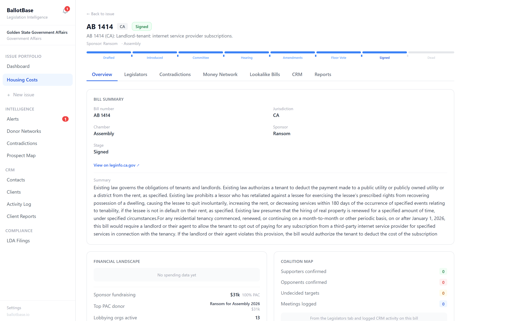
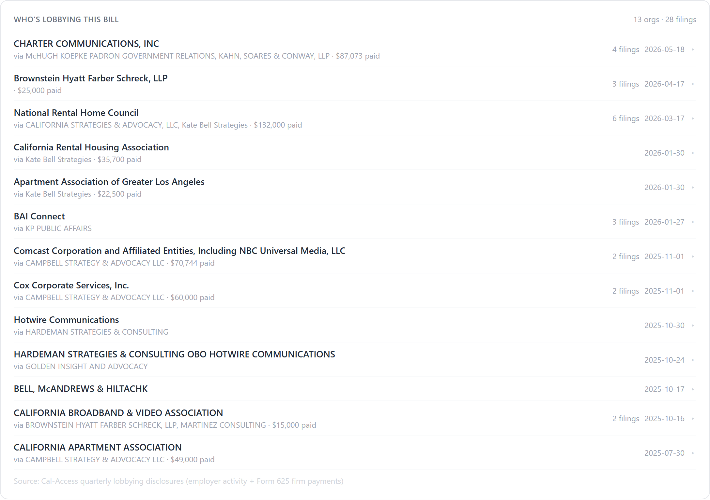
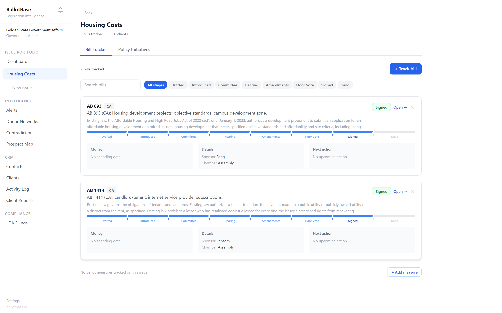

Integrations
Real-time donation sync
Connect your fundraising platform and every gift lands in your dashboard the moment it hits — pacing, refcodes, and pledges included.


Every bill and ballot measure, the money and lobbying moving it, and an alert when the players you're watching make their move. The full lifecycle of a policy fight, in one system.
Every link in this chain is public record, scattered across registration filings, quarterly disclosures, and campaign reports at the state and city level. BallotBase joins them into one picture, automatically.
Live data from a real tracked bill, AB 1414, a landlord-tenant broadband fight with a dozen organizations lobbying both sides.

Bill page, AB 1414Click image to zoom

Who's lobbying this bill13 organizations, 28 filings, every employer, the firm they hired, and what they paid.

Issue portfolioYour issues, bills, legislators, and coalition, organized the way a practice actually runs.
Votes and money, cross-referenced on every tracked bill.
Daily alerts from the registration record, matched to your issues.
Built with the money layer underneath, so every bill, vote, and stakeholder comes with financial context no other tracker has.
A new lobbying registration, a fresh retainer, contributions landing in committee members' accounts, these show up in the disclosure record weeks or months before a hearing makes the news. Traditional trackers start paying attention when a bill moves. BallotBase starts when the money does.
That's the difference between reacting to the fight and seeing it form.
Name the legislators a vote hinges on. Name the organizations you expect to move against you. BallotBase watches the public record and fires the moment their money reaches your targets, while there's still time to do something about it.
Every historical bill shows you the funders who bankrolled the last version of your fight. Add them to the bill you're working now, and you'll know the moment they resurface. The other side reuses its playbook. So should you.
Connect your fundraising platform and every gift lands in your dashboard the moment it hits — pacing, refcodes, and pledges included.
Request a demo and we'll walk through a live issue portfolio, real bills, real lobbying disclosures, real money networks.
No credit card required. We'll reach out personally within 24 hours.